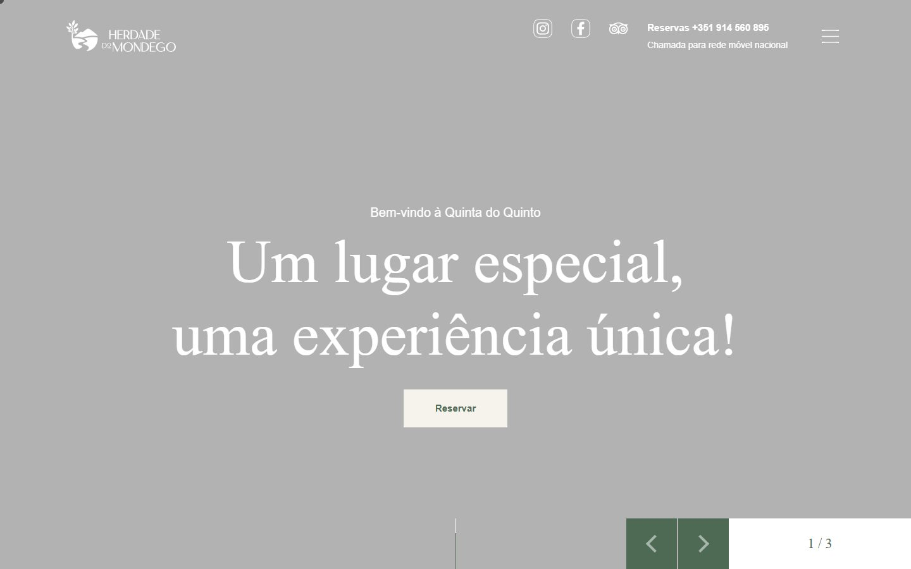
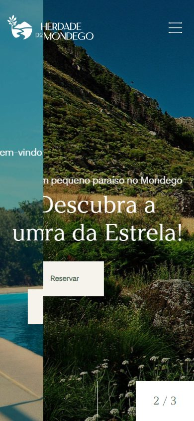
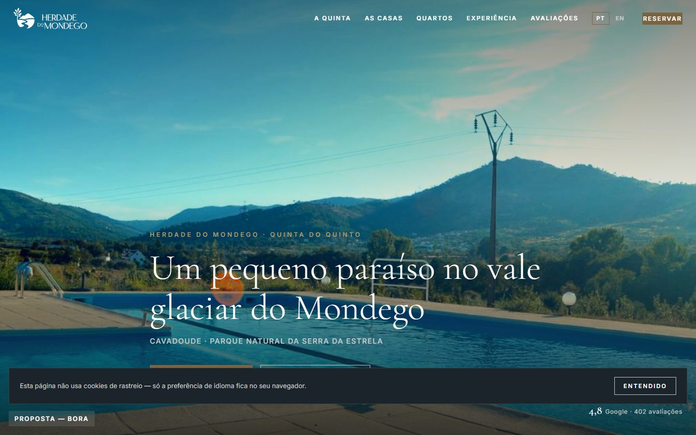
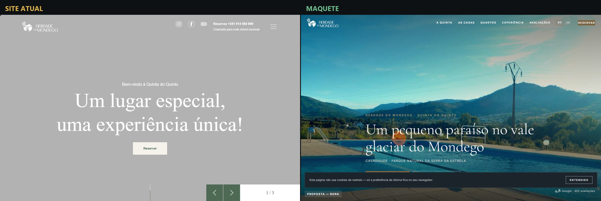
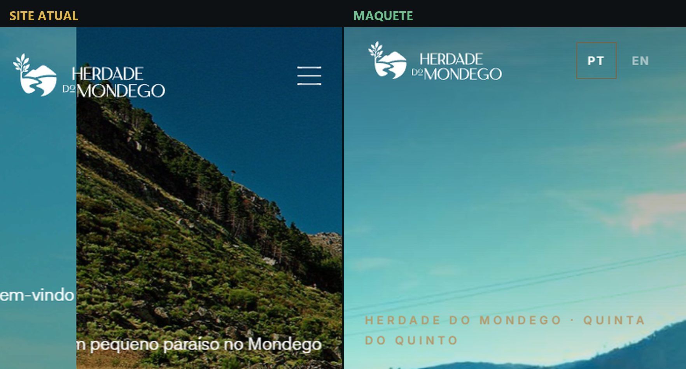
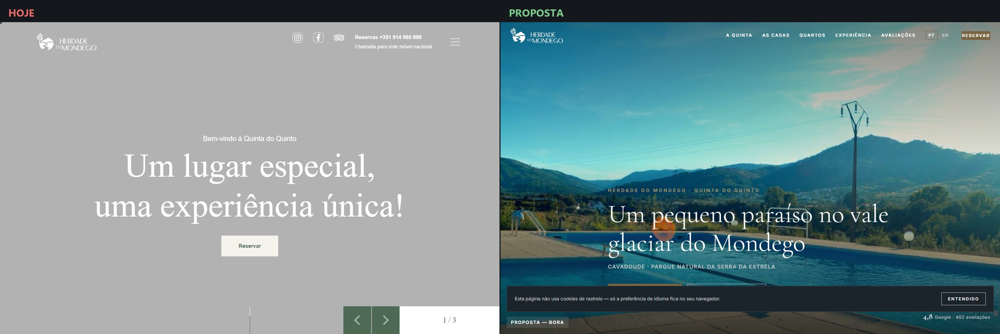

Capturas reais do trabalho da linha de propostas. Esta pasta existe para a Claude.ai ver com os próprios olhos (noindex; permitida no robots).






# Teste dos 3 segundos — Herdade do Mondego
> Juiz de visão: executor da sessão (Claude), 2026-08-31.
> Pergunta única: "qual destes dois parece o site mais caro e mais profissional?"
## VEREDITO: A MAQUETE GANHA
## Porquê, em concreto
À esquerda (site atual, herdadedomondego.pt): o primeiro ecrã chegou como uma
parede cinzenta com texto branco — o carrossel do herói não carregou nem à
primeira nem à segunda captura independente (`antes-home-1440.png` e
`antes-home-v2-1440.png`, tiradas com minutos de intervalo, com rolagem e
espera de rede). Mesmo que carregue nalgumas visitas, é uma fragilidade real
do site deles: o primeiro ecrã depende de um carrossel lento. O que se vê:
título genérico ("Um lugar especial, uma experiência única!"), um botão
pequeno, setas de carrossel, zero prova social.
À direita (maquete): fotografia real da quinta em ecrã cheio com vídeo por
cima, título específico ("Um pequeno paraíso no vale glaciar do Mondego"),
o nome duplo resolvido, notas 9,4 e 4,8 à vista, botão de reserva com
contraste, navegação estruturada.
Aos 3 segundos, a maquete parece um hotel de nível internacional; o site
atual parece uma página a meio de carregar. Sem empate.
## Nota de justiça
O julgamento não depende do azar do carrossel: ainda que o herói deles
carregasse, a maquete ganha pela tipografia, pela prova social visível e
pela reserva sempre presente. Mas fica registado que as duas capturas do
site atual apanharam o herói vazio — e isso é, em si, parte do diagnóstico.